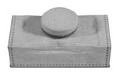
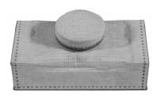

Pneumatická hrací traktura je systém, spojující klávesy v hracím stole
s tónovými ventily ve vzdušnici pomocí stlačeného vzduchu. K jeho vedení
používá trubičky – rourky a další komponenty
tak, že se přenos pohybu klávesy na pohyb příslušného ventilu děje jen
pneumatickou cestou. Tento systém traktury se často souhrnně nazývá
„rourková pneumatika“. Na následující ilustraci řezu varhanami s kuželkovou vzdušnicí a rejstříkovými
kancelami je hrací traktura zvýrazněna červenou
barvou. (Podrobnější popis jednotlivých součástí je
uveden na úvodní stránce "Pneumatická
traktura"). |
Činnost pneumatické traktury spočívá v přenosu tlakového
impulsu od hracího stolu (klávesy) po příslušný tónový ventil ve vzdušnici.
Stisk klávesy způsobí otevření řídícího ventilu (prvního na pomyslné dráze
od klávesy k píšťale) a vpuštění tlakového vzduchu do vedení. Po cestě
k ventilu pod píšťalou může vzduch procházet celou řadou vložených ventilů
s různou funkcí (kombinace, kolektivy, spojky) až k relé pod vzdušnicí
(u velkých varhan může být jeho cesta přerušena i několika dalšími mezirelé).
|
Animace představuje činnost jedné klávesy
v pneumatickém systému. Na klávesu nemusí hráč působit příliš velkou silou
(na pneumatické varhany se ve srovnání s mechanickými systémy hraje poměrně
lehce, má to však své pro i proti…). Díky této síle se nadzvedne ventil
ve vzduchové komoře, nacházející se bezprostředně nad klávesami a stlačený
vzduch naplní k ventilu připojenou rourku vedoucí k relé ve vzdušnici.
Následující animace uvádí příklad konstrukce manuálové klaviatury s tímto
pneumatickým systémem: |
V hracím stole varhan s pneumatickou trakturou je
vestavěna vzduchová komora. Je to podlouhlý zásobník nevelkých rozměrů,
naplněný stlačeným vzduchem (spojený konduktem s měchem). V této komoře
jsou umístěny řídicí ventily, spojené s klávesami. Ventilů je tolik, kolik
je kláves, stisk každé klávesy způsobí otevření odpovídajícího ventilu.
Pod každým ventilem je malá komůrka (kancela), ve které se nachází vstupní
otvor příslušné rourky (těch je také tolik, kolik je kláves – tónů). |
|
Načrtnuté uspořádání je jen jedním z mnoha, můžeme se setkat
s celou řadou odlišných konstrukcí, např. na této animaci je řešení na
bázi klapkového ventilu, spojeného s klávesou nepřímo přes abstrakt (tahací
drát). |
V předchozích případech byly řídící ventily, ovládané
klávesou v tlakové funkci - vpouštějící vzduch do vedení. V klidovém stavu
je vedení od těchto ventilů bez tlaku. V pneumatické traktuře lze ale
využít i opačné řešení – výpustný systém, který je v klidu pod tlakem
a řídicí ventily mají výpustnou funkci (nebo kombinovanou výpustně – tlakovou).
|
Na animaci je uveden příklad
výpustného systému v hracím stole. Stlačený vzduch ve vedení je v klidovém
stavu dodáván do systému ze vzduchové komory (někde dále v traktuře, např.
v navazujícím relé). Stisk klávesy otevře výpustný ventil a z rourky unikne
tlakový vzduch (tlak se vyrovná s atmosférickým). Tento impuls se přenese
dále do traktury a je příčinou zapůsobení navazujícího prvku (např. relé). |
Vzduchový kanál, napájející pneumatický systém se
samozřejmě může nacházet i přímo v hracím stole. V něm je pak umístěn
dvojčinný ventil (s funkcí výpustně – tlakovou), který po stisku klávesy
vypouští vzduch z vedení k navazujícímu prvku. Konstrukce řídícího ventilu závisí na tom, jaký pneumatický systém zvolil pro svůj nástroj varhanář (zda systém tlakový či výpustný). Co se děje dále se vzduchem vpuštěným či vypuštěným do či z rourek v hracím stole? Princip je jednoduchý – stisk klávesy (či pohyb jiného ovládacího prvku) a tím změna stavu řídícího ventilu (otevření pro vpuštění či vypuštění vzduchu) musí na opačném konci traktury způsobit vykonání odpovídající činnosti (zaznění píšťaly, vpuštění vzduchu do kancely, přesunutí zásuvky apod.). I když je základní princip jednoduchý, zkonstruování dobře a precizně fungujícího pneumatického systému už tak prosté není, neboť je nutné překonat mnohé záludnosti a omezení, které přináší využití stlačeného vzduchu. V prvé chvíli se může zdát, že nejjednodušší by bylo řešení načrtnuté na následující animaci: |
Stisk klávesy otevírá kuželkový ventil, který vpouští
vzduch do rourky (konduktu), který vede přímo k píšťale (ventil by tak
byl současně řídicí i výkonný člen). Toto řešení je však z více praktických
důvodů nepoužitelné. Rourka, vedoucí od hracího stolu k píšťale je zpravidla
značné délky a tlak a množství vzduchu v ní by nestačily ke korektnímu
nasazení tónu píšťaly. Kromě toho různé píšťaly potřebují různé množství
vzduchu pro správnou intonaci a znění (navíc s konstantním tlakem, jinak
se rozlaďují). Bylo by tedy nutné používat rourky různých průměrů a ventily
v hracím stole různých, mnohdy velkých rozměrů (hluboké tóny). Jedna klávesa
by mohla ovládat jen jednu píšťalu, určitě by šlo ovládat současně více
píšťal (např. více rejstříků, při doplnění o systém jejich vypínání),
to by ale vyžadovalo další zvětšení průřezu rourek i ventilů, aby se všem
dostávalo odpovídajícího množství vzduchu. Další vady tohoto uspořádání vyplývají z fyzikálních vlastností stlačeného vzduchu (pružnost, ztráty tlaku při vedení v rourkách, hlavně na ohybech…) a v konečném důsledku znemožňují použití této jednoduché konstrukce ve větších nástrojích. Do traktury je nutno vložit další člen – relé (jeho konstrukce a princip jsou popsány v části komponenty pneumatické traktury). Vložením relé dojde k oddělení ovládací a pracovní části a získáme pneumatický systém s lepšími vlastnostmi: |
V tomto příkladě je využito jedno relé, které je
současně výkonným (akčním) členem – výkonová část relé vpouští čerstvý
vzduch přímo do píšťaly. Toto uspořádání má o něco lepší vlastnosti, než
výše uvedené a mohlo by být využita v případě ovládání jednotlivého hlasu
blízko klaviatury nebo jiného, nepříliš vzdáleného zařízení (jiného než
píšťaly). V naprosté většině případů (od určité délky rourky, přesahující
cca několik metrů) se však jeví také jako nedostačující. Vzduch (vlastně směs plynů) je stlačitelný, což způsobuje, že v uzavřeném prostoru může zvětšovat či snižovat svůj objem a tlak. Čím větší je vzduchový sloupec (tj. v čím delší rource je vzduch uzavřen), tím má horší vlastnosti jako nositel impulsů. Ve většině případů a vždy, když je řídicí ventil více vzdálen od výkonného členu, nejsou tyto navzájem přímo spojeny jedinou dlouhou rourkou, i když by se takové řešení nabízelo jako nejprostší. S ohledem na korektní, spolehlivou funkci a především rychlost práce soustavy však nejjednodušší řešení není možné použít. Díky výše nastíněným nevýhodným vlastnostem stlačeného vzduchu bude na delší vzdálenosti spolehlivěji a hlavně rychleji pracovat několikastupňový systém s jedním nebo i několika vloženými relé (mezirelé) a to i přesto, že každé z těchto relé pracuje s konečnou rychlostí a zavádí tak do cesty přenosu impulsu určité zpoždění. Praxe ukazuje, že rozdělení traktury na několik kratších úseků a použití většího množství součástí sice dělá konkrétní nástroj složitější, jeho technické i umělecké vlastnosti (ovladatelnost, přesnost ozevu tónu…) jsou však podstatně vyšší, než u byť jednoduchých, přesto však nevalných nástrojů s přísně jednoduchou stavbou pneumatiky. Na následující animaci je přestavena funkce třístupňové traktury (jednotlivé stupně – relé jsou ve skutečnosti podstatně dále od sebe a jsou propojeny dlouhým rourkovým vedením: |
V příkladu jsou uvedeny všechny nejčastěji používané
komponenty pneumatické traktury – ve vzduchové komoře v hracím stole (1)
se nachází řídicí ventil, který je ovládán hráčem prostřednictvím klávesy.
Dlouhá rourka, která tlakovým impulsem ovládá výkonný ventil (tónový)
v rejstříkové kancele ve vzdušnici je rozdělena na kratší úseky. Do každého
z nich je vloženo mezirelé (2,3,4) tvořící jednotlivé stupně systému (skupiny).
Každé z relé přijímá impuls z předchozího stupně (přivedený tlakový vzduch)
a předává jej dalšímu stupni (opět jako tlakový vzduch ale s novým – „čerstvým“
tlakem). Animace je pro názornost zpomalená, skutečná traktura pracuje
podstatně rychleji. |
Pneumatická traktura může spolupracovat se všemi
používanými typy vzdušnic. Konstrukce jednotlivých komponentů bude vždy
prakticky shodná, lišit se bude jen poslední – výkonný (akční) člen. U
každé ze vzdušnic lze použít celou řadu konstrukčních řešení, ukážeme
si zde pro zjednodušení a názornost jen ty nejrozšířenější z nich. (Pro
další zjednodušení je v příkladech uvažováno jen s jednostupňovou trakturou). První příklad ukazuje spojení pneumatické traktury s nejčastějí používanou tónovou vzdušnicí (zásuvková vzdušnice s tónovými kancelami). |

Hrací stůl je se vzdušnicí spojen prostřednictvím
rourky. V závislosti na tom, zda je rourka naplněna stlačeným vzduchem
(klávesa stisknuta) či ne, mění se poloha ventilu s kuželkou, která spočívá
na membráně. |
 |
V klidovém stavu (rourka od hracího stolu
je bez tlaku) jsou otevřeny oba otvory ve ventilové komoře a vzduch může
volně proudit mezi komorou a vnitřkem klínového míšku. Tlaky vně i uvnitř
míšku jsou vyrovnány a tónový klapkový ventil je uzavřen (zvedá jej pružina
pod klapkou a částečně i tlak vzduchu v komoře). |
Stisk klávesy vpustí vzduch do rourky a způsobí nadzvednutí
membrány i na ní ležící kuželky ventilu. Tento ventil uzavírá otvor, kterým
vzduch proudil do míšku a současně s ním spojený kontraventil umožní volný
odchod (výfuk) vzduchu z míšku do okolí. Vzniklý tlakový rozdíl (trvající
přetlak ve ventilové komoře oproti tlaku uvnitř míšku, který se rychle
vyrovnává s atmosférickým) způsobí stlačení míšku, jeho horní deska se
sklopí a přes táhlo (drát) s sebou stáhne i klapku tónového ventilu, který
se tak otevře. Stlačený vzduch z ventilové komory proudí do tónové kancely
a píšťaly mohou zaznít. |
V okamžiku uvolnění klávesy se celá soustava vrací
do klidového stavu. Popsaná funkce je znázorněna ve zpomaleném tempu na
následující animaci: |
 |
Takto jednoduché uspořádání má jednu nevýhodu – pohyb míšků uvnitř ventilové komory způsobuje mírné změny tlaku v této komoře. Ty mohou mít vliv na ozev píšťal (mírné rozlaďování, „zhoupnutí“ už znějícího tónu při pohybu míšku dalšího tónu atd.). Proto se často pro míšky staví samostatná vzduchová komora s vlastním přívodem vzduchu (viz fotografie).
|
Nejčastěji uváděné nevýhody pneumatické traktury
jsou složitá konstrukce s mnoha díly (menší spolehlivost), většinou obtížné
odstraňování závad (nesnadný přístup k některým elementům) a hlavně znatelné
zpoždění, způsobené omezenou rychlostí proudění vzduchu v konduktech.
Zpoždění lze mírně zmenšit jen umístěním hracího stolu co nejblíže varhanám. |
Pneumatická traktura může spolupracovat i s rejstříkovými
vzdušnicemi (např. kuželkovou vzdušnicí s rejstříkovými kancelami). |
Podobně jako v předchozím příkladě i tady klávesa
ovládá bezprostředně jen ventil v hracím stole. Stlačený vzduch pak proudí
rourkou a ovládá relé pod vzdušnicí (mechanismus relé je na obrázku zvýrazněn). |
 |
Relé je dodatečný prvek
v traktuře, umístěný u vzdušnice a řídící tok vzduchu v konduktech. Ventilů
ve vzduchové komůrce a navazujících konduktů je tolik, kolik je kláves
(pokud na vzdušnici nejsou dodatečné píšťaly pro oktávové spojky). Není-li
v rource, přicházející od hracího stolu stlačený vzduch, kuželka ventilu
v relé leží na splasklém míšku a uzavírá tak přívod vzduchu do příslušného
konduktu. |
 |
Když stlačený vzduch od hracího stolu dorazí konduktem do míšku v relé ten se nadme a nadzvedne na něm ležící kuželku, otevře ventil v relé a vpustí vzduch do konduktu. Na konduktu jsou připojeny malé míšky (viz foto), které po jeho naplnění tlakovým vzduchem přímo nadzvednou kuželkové ventily ve vzdušnici a píšťaly příslušného tónu mohou zaznít.
Práci systému přibližuje následující animace: |
I v tomto případě narážíme na problém zpoždění tónu
(čas mezi stiskem klávesy a zazněním píšťaly). Zpoždění opět vzniká na
dlouhé cestě stlačeného vzduchu od klávesy k píšťale. Tu zde tvoří nejenom
rourky, ale i kondukty pod vzdušnicí. Čím je více hlasů, tím více míšků
je na konduktu a tím je kondukt delší (dáno určenými rozměry vzdušnice)
a jeho naplňování je nerovnoměrnější a trvá déle. V krajním případě může
dojít až k nesoučasnému zaznění píšťal různých hlasů (postupně od kraje
vzdušnice). |
Výše představené systémy pracují na aktivním – tlakovém principu – ventil se otevře po natlakování vedení. Ve varhanách se ale můžeme setkat i s trakturou na výpustném principu, kde tlakový vzduch v klidovém stavu drží ventily uzavřené, ty se otevřou po jeho vypuštění (odtud název „výpustný, výpustka“). Výpustné systémy jsou v současnosti považovány za „slepou cestu“ ve varhanářské praxi, v době svého vzniku však byly mnohdy řazeny mezi špičkové. Příklad vzdušnice s výpustným systémem ukazuje následující obrázek. Tento typ membránové vzdušnice bývá někdy označován dle svého tvůrce jako Witzigův. Vzdušnice má rejstříkové kancely (podélný typ vzdušnice) s tónovými ventily ve dně kancel. |
Stejně jako ve všech příkladech, týkajících se pneumatické
traktury i zde máme klávesu, která ovládá ventil ve vzduchové komůrce
v hracím stole a rourku, která dovede vzduch k relé pod vzdušnicí. Relé
má poněkud odlišnou konstrukci, než v aktivních systémech, jiný je i způsob
uzavírání otvorů k píšťalám. |
 |
Základem sacího (výpustného) systému je spojení ventilu s membránou a pružinkou (pružina usnadňuje a zlepšuje práci ventilu). Díky tomuto klíčovému komponentu se často tento typ vzdušnic nazývá „membránová“ nebo „tobolková“. Samotná membrána je z jemné kožené blány, v současnosti se často kůže nahrazuje plastovými fóliemi (viz obrázky).
Kroužek na membráně je plstěný, což zajišťuje dobrou těsnost a bezhlučnou funkci ventilu. Jak spolupracuje relé a membrány ve výpustném systému? |
|
V klidovém stavu (klávesa v hracím stole není stisknuta)
je ventil v relé v takové poloze, že se vzduch z komůrky relé dostane
do konduktu napájejícího zespod membrány. V rejstříkových kancelách (napájených
vzduchem přes rejstříkový ventil, který zde není znázorněn) je stlačený
vzduch, obklopující vtokový otvor píšťaly. Tento otvor je nyní zakryt
těsnícím kroužkem, který k němu tiskne nadmutá membrána, proto nemůže
proudit dále do píšťaly a tón nezní. Vzduch v kancele sice tlačí na membránu
shora, ta je však nadzvedávána tlakem vzduchu v konduktu a silou pružinky
takže nedovolí otevření otvoru píšťaly. |
Situace se mění až po stisku
klávesy. Přítok vzduchu z traktury do míšku relé způsobí nadzvednutí ventilu
v něm a zastavení přívodu vzduchu do konduktu k membránám. Současně se
otevírá spřažený kontraventil a ten vypustí vzduch z konduktu. Tlak pod
membránami se sníží až na úroveň okolního atmosférického tlaku. Vzduch
v rejstříkových kancelách zapnutých rejstříků (u nezapnutých je tlak roven
tlaku atmosférickému a díky pružince při rovnosti tlaků zůstane membrána
v klidu) působí na membrány silou stejnou, jako před stiskem klávesy,
v tuto chvíli mu však díky neexistenci protitlaku pod membránou stojí
v cestě jen síla pružinky. Membrána proto poklesne, těsnící kroužek se
vzdálí od vtokového otvoru píšťaly a vzduch z kancely do ní může volně
proudit. Tón zazní. |
 |
Vzdušnice tohoto uspořádání pracují správně, pokud
vzduch v rejstříkových kancelách má mírně nižší tlak, než vzduch pod míšky
(pracovní). Následující animace ilustruje činnost celého systému pneumatické
traktury s membránovou vzdušnicí: |
Vzdušnice tohoto typu se vyznačují velmi přesnou
a rychlou funkcí (s možností přesné a rychlé hry včetně repetice). Problematická
je ale jejich funkce v okamžiku poškození některé z membrán. V aktivním systému se jakékoliv poškození (míšku, membrány) projeví nefunkčností příslušného ovládaného prvku (píšťala nezní). Tato porucha je méně nepříjemná než opačný efekt u výpustného systému, kde závada míšku či membrány způsobí trvalé znění postiženého tónu (píšťaly). Nežádoucí znění píšťaly lze velmi obtížně při hře zakrýt (naopak neznějící píšťala se při hře více rejstříky snadno ztratí a mnoho posluchačů ji ani nepostřehne). Často jediným řešením je pak vyjmutí postižené píšťaly z nástroje. Dalšími nevýhodami jsou vysoká citlivost na změny teploty a vlhkosti a pracná (obtížná) výměna poruchových membrán (obtížnější, než je výměna míšku na konduktu pod vzdušnicí u aktivního systému). Proto se v současné době tento typ vzdušnice už nestaví. |
 |
Membránová vzdušnice může používat jak vodorovné membrány
(předchozí příklad), tak i membrány svislé. Princip funkce je v obou případech
stejný, liší se jen konstrukce a poloha vtokového otvoru k píšťale. |

 |
Na souvisejících stránkách jsou popsány nejčastěji
používané komponenty pneumatické
traktury, rejstříková
traktura, traktura spojek
a pneumatická pomocná zařízení v kapitolách o crescendu
a kolektivech a volných kombinacích. |
Poznámka: Tato stránka je součástí Anatomie varhan ®, © Ing. Petr Bernat. Všechny animace © Konrad Zacharski


 
